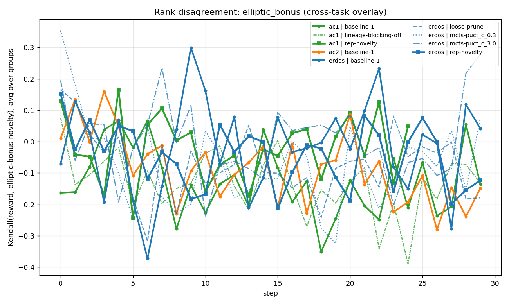
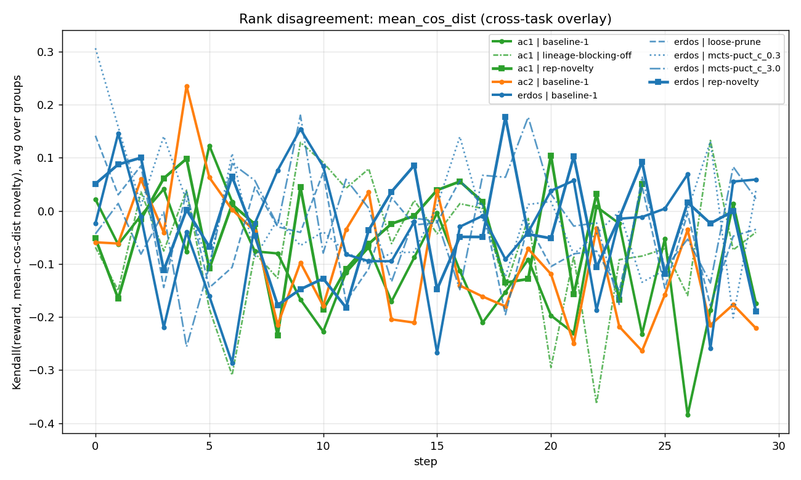
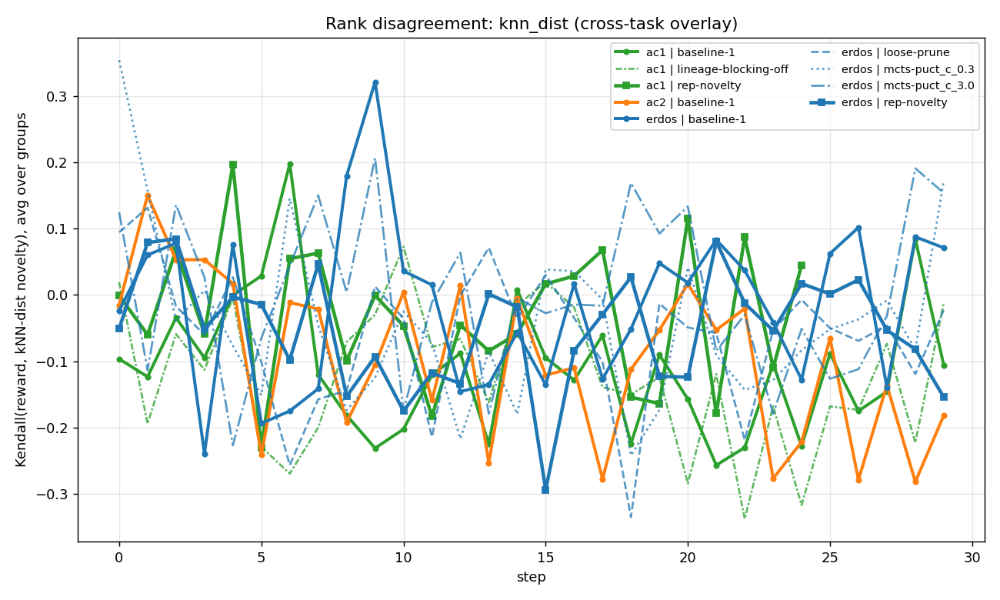

D6 EXPERIMENT
D6 — Reward and novelty are uncorrelated
Within each 16-rollout group, rank the rollouts two ways: by reward, and by representational novelty. Compute Kendall τ between the two rankings. The answer: ~0 throughout training.
Three novelty measures
We tried three definitions of "novelty" to make sure the finding isn't metric-specific:
- Elliptic bonus: LinUCB / OFUL confidence width
√(hᵀ A⁻¹ h)against an online covariance. - Mean-cosine-distance: mean cosine distance to other group members.
- kNN-distance: distance to nearest neighbor among other group members.
Evidence



What it means
This is the structural justification for adding a novelty bonus. If reward and novelty were correlated (τ near ±1), a novelty bonus would just be a relabeled reward bonus. Since τ ≈ 0, novelty carries independent information about which states to explore. The bonus we add isn't a different way to chase reward; it's a different signal entirely.